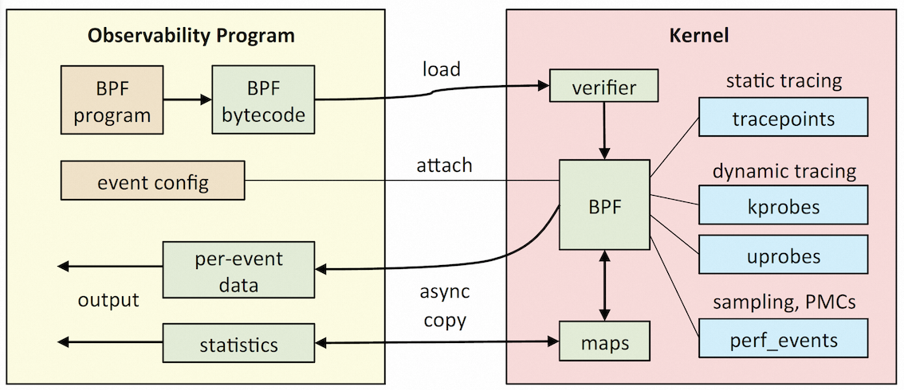

eBPF技术背景#
BPF（Berkeley Packet Filter）是类Unix系统上数据链路层的一种原始接口，提供原始链路层封包的收发。BPF在数据包过滤上引入了两大特性：
- 一个可有效地工作在基于寄存器结构 CPU 上的虚拟机；
- 应用程序只复制与过滤数据包相关的数据，不复制数据包的所有信息。
eBPF 在原始BPF基础上进一步针对现代 CPU 硬件进行了指令集优化，增加了 VM 中的寄存器数量，使数据处理速度提高了数倍。总结来说，eBPF 提供了一个基于寄存器的虚拟机，使用自定义的 64 位 RISC 指令集，能够在 Linux 内核内运行本地即时编译的 BPF 程序，并能访问内核功能和内存的特定子集。
eBPF程序分为用户空间程序和内核程序两部分：

- 用户空间程序负责加载 BPF 字节码至内核，一般使用者可以通过 LLVM 或者 GCC 将编写的 BPF 代码程序编译成内核可验证的 BPF 字节码。内核加载前会使用验证器 verfier 组件保证字节码的安全性，以避免对内核造成灾难问题。如有需要，用户空间程序也会负责读取并处理内核回传的统计信息或者事件详情。
- 在内核中加载的 BPF 字节码程序会在内核中执行特定事件，BPF 程序可能基于 kprobes / uprobes / tracepoint / perf_events 等中的一个或多个事件。如有需要，内核程序也会将执行的结果通过缓存 map 或者 perf-event 事件发送至用户空间。
通过上述机制，eBPF 的使用者（不局限于内核开发者）能够基于系统内核或程序事件高效、安全的（在内核中）执行特定代码，通过向内核添加 eBPF 模块来增加功能。
基于eBPF进行软件开发#
eBPF 指令是固定大小的 64 位编码，大约有上百条指令，被分组为 8 类，常用指令支持如从通用内存进行加载/存储，前/后（非）条件跳转、算术/逻辑操作和函数调用等。
1
2
3
4
5
6
7
8
9
10
11
12
13
|
/*
msb lsb
+---------------------+---------------+----+----+-------+
|immediate |offset |src |dst |opcode |
+---------------------+---------------+----+----+-------+
*/
struct bpf_insn {
__u8 code; /* opcode */
__u8 dst_reg:4; /* dest register */
__u8 src_reg:4; /* source register */
__s16 off; /* signed offset */
__s32 imm; /* signed immediate constant */
};
|
直接使用原始字节码来实现 eBPF 程序，非常像编写汇编代码，这种行为无疑是较为困难，通常使用更高级别的语言和工具来实现功能复杂的 eBPF 用例。一种很自然的想法是能不能将高级语言的中间表示层编译成 eBPF 程序模块，这样我们就可以将使用具有“限制性“的高级抽象层语言来编写 eBPF 程序。这种设计有效地将内核中运行的eBPF字节码的定义（后端）从字节码加载器和前端程序中分离出来。
基于这样的目的，社区创建了 BCC 项目，使用户可以使用带有限制性的C语言（BPF C）编写 eBPF 后端程序，并且 BCC 为用户封装了许多实用底层函数避免重复造轮子的苦恼。借助 BCC，用户还可以通过编写 python 来快速实现加载器和前端程序。此外，另一个项目 BPFtrace 建立在 BCC 之上，通过特定领域语言提供更高级别的抽象逻辑，以帮助用户实现更快速分析/调试。
我们以 BCC 的 bashreadline 为例简单介绍下使用 BCC 进行 eBPF 程序开发的流程。
1
2
3
4
5
6
7
8
9
10
11
12
13
14
15
16
17
18
19
20
21
22
23
24
25
26
27
28
29
30
31
32
33
34
35
36
37
38
39
40
41
42
43
44
45
46
47
48
49
50
51
52
53
54
55
56
57
58
59
60
61
62
63
64
65
66
67
68
69
70
|
#!/usr/bin/env python
from __future__ import print_function
from bcc import BPF
from time import strftime
import argparse
############################
# part 1 #
############################
# load BPF program
bpf_text = """
#include <uapi/linux/ptrace.h>
#include <linux/sched.h>
struct str_t {
u32 pid;
char str[80];
};
BPF_PERF_OUTPUT(events);
int printret(struct pt_regs *ctx) {
struct str_t data = {};
char comm[TASK_COMM_LEN] = {};
if (!PT_REGS_RC(ctx)) return 0;
data.pid = bpf_get_current_pid_tgid() >> 32;
bpf_probe_read_user(&data.str, sizeof(data.str), (void *)PT_REGS_RC(ctx));
bpf_get_current_comm(&comm, sizeof(comm));
if (comm[0] == 'b' && comm[1] == 'a' && comm[2] == 's' && comm[3] == 'h' && comm[4] == 0 ) {
events.perf_submit(ctx,&data,sizeof(data));
}
return 0;
};
"""
############################
# part 2 #
############################
parser = argparse.ArgumentParser(
description="Print entered bash commands from all running shells",
formatter_class=argparse.RawDescriptionHelpFormatter)
parser.add_argument("-s", "--shared", nargs="?",
const="/lib/libreadline.so", type=str,
help="specify the location of libreadline.so library.\
Default is /lib/libreadline.so")
args = parser.parse_args()
name = args.shared if args.shared else "/bin/bash"
b = BPF(text=bpf_text)
b.attach_uretprobe(name=name, sym="readline", fn_name="printret")
############################
# part 3 #
############################
# header
print("%-9s %-7s %s" % ("TIME", "PID", "COMMAND"))
def print_event(cpu, data, size):
event = b["events"].event(data)
print("%-9s %-7d %s" % (strftime("%H:%M:%S"), event.pid,
event.str.decode('utf-8', 'replace')))
b["events"].open_perf_buffer(print_event)
while 1:
try:
b.perf_buffer_poll()
except KeyboardInterrupt:
exit()
|
可以将上面这个 eBPF 程序分为3个部分：
- Part 1 是用 BPF C 实现的 eBPF 后端程序，首先这里构建了内置 BPF_PERF_OUTPUT 结构来创建一个 BPF table，通过 perf 环形缓冲区将自定义事件数据推送到用户空间。用户可以通过 events 来获取推送的数据。然后在 printret 函数中通过 PT_REGS_RC 来判断、获取当前环境函数的返回值，并通过内置函数获取程序pid和返回值。通过内置函数 bpf_get_current_comm 判断当前程序名称，如果是
bash 命令就向 events 输出程序运行返回值。
- Part 2 是通过 BCC 的支持利用 python 进行前述 eBPF 后端程序的加载器。加载类型是 uretprobe，即将程序挂载到 user-level 的 readline() 函数上，即在用户调用 readline() 函数返回时执行相应 eBPF 后端代码。
- Part 3 是显示输出的前端程序，用户对 events 缓冲区进行polling，当缓冲区有内容时将对应内容输出显示。
至此，通过运行这一个 BCC 程序，用户就可以通过 eBPF实现监控所有 bash 进程的 readline 函数，输出对应 pid 和 readline 对返回结果（即 bash 输入的命令内容）。更多的内置功能及接口自行参见相关项目官网。
事件类型#
前面提到 BPF 程序类型可能基于 kprobes / uprobes / tracepoint /perf_events 等事件中的一个或多个，其中：
- kprobes：内核中动态跟踪。可以跟踪到 Linux 内核中的函数入口或返回点，但不是稳定接口，可能会因为内核版本变化导致跟踪失效。
理论上可以跟踪到所有导出符号 /proc/kallsyms 但不在 /sys/kernel/debug/kprobes/blacklist 中的函数。
- uprobes：用户级别的动态跟踪。与 kprobes 类似，只是跟踪的函数为用户程序中的函数。
- tracepoints：内核中静态跟踪。tracepoints 是内核开发人员维护的跟踪点，能够提供稳定的接口，但是需维护数量且场景受限。
- USDT：用户静态探针，类似 tracepoints 但是需要用户空间自己维护。
- perf_events：定时采样和 PMC 事件。
eBPF 模块各种类型事件的加载执行在后面有时间的话再展开讲讲，有兴趣的可以搜索 Linux 内核的 text hook/poke、static-key 和 static-jump 等机制实现。
常用eBPF工具与指令#
BCC 和 BPFtrace 提供了很多现成实用的工具，下面分享一些我觉得有用的工具，具体参数参考各个命令的help查看。
1
2
3
4
5
6
7
8
9
10
11
12
13
14
15
16
17
18
19
20
21
22
23
|
# 检查 pid程序打开的文件
opensnoop -p 123
# 检测 disk 的 I/O 状态
biolatency [-D for each disk] [-Q include OS queued time in I/O time]
# 追踪pid程序fs操作大于10ms的操作
ext4slower 10 -p 123
# 追踪pid程序fs操作分布
ext4dist -p 123
# 系统 time 时间的 cache 状态
cachestat time
llcstat time
# 函数 count / latency / call-interval 统计:
funccount './test:read*' -p 123 -d 1
funclatency './test:read*' -p 123 -d 1
funcinterval './test:read*' -p 123 -d 1
# on-CPU 和 off-CPU 火焰图，采集 DURATION 秒
profile -p 123 -f DURATION --stack-storage-size=165535 > profile01.txt
flamegraph.pl --width=1600 < profile01.txt > profile01.svg
offcputime -p 123 -f DURATION --stack-storage-size=165535 > offcpu01.txt
flamegraph.pl --width=1600 < offcpu01.txt > offcpu01.svg
# 采集 pid 程序cache-misses超过的10000次线程及其10000次的次数
bpftrace -e 'hardware:cache-misses:10000 /pid==123/ { @[comm, tid] = count(); }'
|